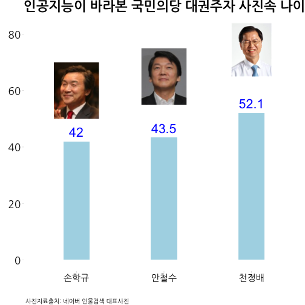
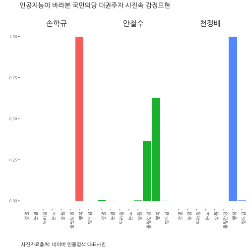
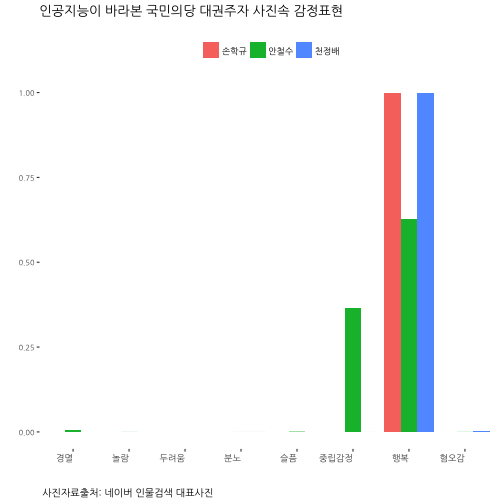

데이터 과학자와 함께 하는 제19대 대통령 선거
국민의당 대권주자 사진 속 나이와 감정
1. 국민의당 대선 후보
네이버 인물검색 속 사진을 대상으로 인공지능 기계가 판단하는 사진속 국민의당 대선후보 나이와 감정을 분석해 본다.
| 손학규 | 안철수 | 천정배 |
|---|---|---|
2. 국민의당 대선후보 프로필 사진 나이
정보과학교육연합회-R을 이용한 인공지능 튜토리얼에 나와 있는 코드를 기반으로 국민의당 대선후보 프로필 사진을 분석했다.
2.1. 환경설정
# 0. 환경설정--------------------------------------------------
library(httr)
library(XML)
library(ggplot2)
library(png)
library(grid)
library(jsonlite)
library(tidyverse)
library(lubridate)
library(magick)
library(dygraphs)
library(purrr)
library(extrafont)
loadfonts()2.2. 프로필 사진 속 나이 추정
손학규, 안철수, 천정배 사진 데이터를 불러와서 이를 인공지능 API에 던져 사진속 사람의 나이를 추정한다.
# 1. 데이터 불러오기 ----------------------------------------------
img_list <- list.files("data/fig/")
hq <- image_read("data/fig/sohn.jpg") %>% image_convert(., "png")
ahn <- image_read("data/fig/ahn.jpg") %>% image_convert(., "png")
chun <- image_read("data/fig/chun.jpg") %>% image_convert(., "png")
hq_g <- rasterGrob(hq, interpolate=TRUE)
ahn_g <- rasterGrob(ahn, interpolate=TRUE)
chun_g <- rasterGrob(chun, interpolate=TRUE)
# 2. 얼굴인식 API 호출 ------------------------------------------------
face_api_url <- "https://api.projectoxford.ai/face/v1.0/detect?returnFaceAttributes=age,gender"
source("code/secret_key_from_api.R")
img_age_bucket <- list()
for(lst in seq_along(img_list)){
img_name <- paste0("data/fig/", img_list[lst])
img <- httr::upload_file(img_name)
result <- POST(url = face_api_url,
body = img,
add_headers(.headers = c('Content-Type' = 'application/octet-stream',
'Ocp-Apim-Subscription-Key' = face_key))
)
img_age_bucket[[lst]] <- as.data.frame(content(result))[,c("faceAttributes.gender", "faceAttributes.age")]
}
# 3. 데이터 정리-------------------------------------
img_age_buckets <- map(img_age_bucket, rbind) %>% tibble() %>% unnest() %>%
mutate(name = c("안철수", "천정배", "손학규")) %>%
dplyr::select(name, gener= faceAttributes.gender, age=faceAttributes.age)2.3. 프로필 사진 속 나이 시각화
인공지능 기계가 사진 속 나이는 다음과 같이 추정했다.
- 손학규: 42
- 안철수: 43.5
- 천정배: 52.1
보기 좋게 ggplot ggthemes 팩키지를 통해 시각화한다.
# 4. 시각화-------------------------------------
ggplot(img_age_buckets, aes(x=name, y=age, label=age)) +
geom_bar(stat = "identity", fill="lightblue", width=.3) + theme_pander(base_family='NanumGothic') +
scale_y_continuous(limits=c(0,80)) +
geom_text(aes(label = age), size = 7.5, hjust = 0.5, vjust = -0.5, color="blue") +
theme(legend.position="top",
plot.caption=element_text(hjust=0,size=10),
plot.subtitle=element_text(face="italic"),
plot.title = element_text(size=22),
text=element_text(family="NanumGothic"),
axis.text=element_text(size=17, color="black"),
axis.text.x = element_text(angle = 00, hjust = 0.5, size=15),
strip.text.x = element_text(size = 15))+
annotation_custom(hq_g, xmin=1-0.7, xmax=1+0.7, ymin=50, ymax=70) +
annotation_custom(ahn_g, xmin=2-0.7, xmax=2+0.7, ymin=55, ymax=75) +
annotation_custom(chun_g, xmin=3-0.7, xmax=3+0.7, ymin=65, ymax=85) +
labs(x="",y="",title="인공지능이 바라본 국민의당 대권주자 사진속 나이",
caption="\n 사진자료출처: 네이버 인물검색 대표사진",
subtitle="",
fill="")
3. 국민의당 대선후보 프로필 사진 속 감정
프로필 사진 속 나이를 추정했으면 이번에는 얼굴에 나타난 감정을 분석해보자.
3.1. 얼굴에 나타난 감정
# 1. 데이터 불러오기 ----------------------------------------------
img_list <- list.files("data/fig/")
# 2. 얼굴인식 API 호출 ------------------------------------------------
emoface_url <- 'https://api.projectoxford.ai/emotion/v1.0/recognize'
source("code/secret_key_from_api.R")
img_emo_bucket <- list()
for(lst in seq_along(img_list)){
img_name <- paste0("data/fig/", img_list[lst])
img <- httr::upload_file(img_name)
result <- POST(url = emoface_url,
body = img,
add_headers(.headers = c('Content-Type' = 'application/octet-stream',
'Ocp-Apim-Subscription-Key' = emotion_key))
)
img_emo_bucket[[lst]] <- as.data.frame(content(result)[[1]])
}
# 3. 데이터 정리 -------------------------------------
img_eom_buckets <- map(img_emo_bucket, rbind) %>% tibble() %>% unnest() %>%
mutate(name = c("안철수", "천정배", "손학규")) %>%
dplyr::select(name, height=faceRectangle.height,
left=faceRectangle.left,
top=faceRectangle.top,
width=faceRectangle.width,
분노=scores.anger,
경멸=scores.contempt,
혐오감=scores.disgust,
두려움=scores.fear,
행복=scores.happiness,
중립감정=scores.neutral,
슬픔=scores.sadness,
놀람=scores.surprise)
img_emo_buckets_lng <- img_eom_buckets %>% dplyr::select(-height, -left, -top, -width) %>%
gather(emotion, value, -name)3.2. 국민의당 후보별 얼굴에 나타난 감정
# 4. 시각화 -------------------------------------
ggplot(img_emo_buckets_lng, aes(emotion, value, fill=name, group=name)) +
geom_bar(stat="identity") +
facet_wrap(~name) +
theme_tufte(base_family="NanumGothic") +
theme(legend.position="none",
plot.caption=element_text(hjust=0,size=10),
plot.subtitle=element_text(face="italic"),
text=element_text(family="NanumGothic"),
axis.text=element_text(size=7.5),
axis.text.x = element_text(angle = 90, hjust = 1, size=9),
strip.text.x = element_text(size = 15))+
labs(x="",y="",title="인공지능이 바라본 국민의당 대권주자 사진속 감정표현",
caption="\n 사진자료출처: 네이버 인물검색 대표사진",
subtitle="",
fill="")
3.3. 국민의당 후보별 얼굴에 나타난 감정 전체 후보 분석
ggplot(img_emo_buckets_lng, aes(x=emotion, y=value, fill=name)) +
geom_bar(stat="identity", position=position_dodge()) +
theme_tufte(base_family="NanumGothic") +
theme(legend.position="top",
plot.caption=element_text(hjust=0,size=10),
plot.subtitle=element_text(face="italic"),
text=element_text(family="NanumGothic"),
axis.text=element_text(size=7.5),
axis.text.x = element_text(angle = 00, hjust = 1, size=9),
strip.text.x = element_text(size = 15))+
labs(x="",y="",title="인공지능이 바라본 국민의당 대권주자 사진속 감정표현",
caption="\n 사진자료출처: 네이버 인물검색 대표사진",
subtitle="",
fill="")